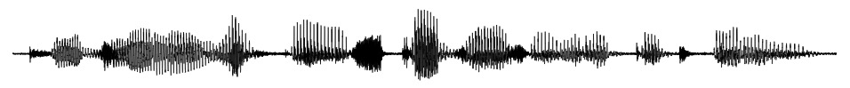
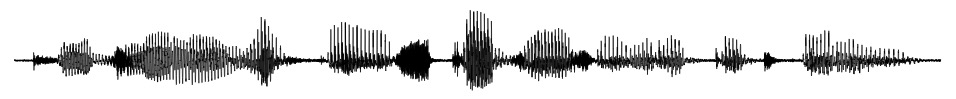

(Thanks to Julia Hirschberg for this annotated chunk)
The two stages of TTS
Text Analysis is Hard
What units are we building from, anyways?
Text Analysis: “How should this chunk of text be pronounced?”
Sound Synthesis: “Let’s turn that into an acoustic signal from playback”

(Thanks to Julia Hirschberg for this annotated chunk)
… but we’ll spend more time on how we do it and why in the next few days
For now, we’re going to focus on the fact that…
Orthographies are more and less phonetically informative
Punctuation schemes are more or less useful in expressing prosody
You’ll need to re-do this step for every kind of text you input
omg r u fr u need 2 redo ths 4 evry dialect n orthogrphy?!111?! wtf
Some languages (e.g. Norwegian) have multiple standard orthographies
The same text analysis doesn’t work for every dialect or situation
Many of today’s slides feature Apple’s old pre-neural TTS engine (the ‘say’ command), and a more recent (~2020) IBM text-to-speech system
This is not a ‘fair’ comparison for modern TTS, but still highlights real troubles
Remember that legacy systems are often the right choice for lower-resource languages or situations
It’s difficult to even detect something like the end of a sentence. Although periods and exclamation and question marks provide good information, there are situations (e.g. the word e.g.) where periods can be used on their own. And we’ll often end sentences by trailing off, blank lines, etc
Initialisms are read aloud as a series of letters, like the CIA, UCSD, NSA, and FYI. Acronyms are pronounced, like NASA, DARPA, FAFSA, or RAV4. And some have very specific pronunciations, like NAACP or AAA.
Apple
IBM
Numbers are hard because we read numbers differently depending on their function. You’re born in 1999, your pin number is 1999, you might have 1999 grains of rice in a cooker, but January 25 is 25 days after the 1.
“We could lead in lead removal.”
“The wedding dress sewer fell into the sewer”
“The plumbing contractor is unionized.”
“The acetic acid is unionized.”
Preparedness across many domains
Medical, Legal, Military, International Places and Concepts
Miscellaneous Technical Jargon
Local street names
Code switching (switching between languages)
Adenocarcinoma in Tubovillious Adenoma bona fide certiorari de jure collusion RICO ex post facto CVN AWACS Escapement Tourbillion Remontoir de Egalite
Apple
IBM
ElevenLabs
On my map is Lebon Drive, Gilman Drive, Miramar Road, Muir Lane, Caminito Santa Fe, Soledad Mountain Road, San Joaquin Drive, Arcadia Road, and I’m now in La Jolla and thinking of Moscow, Guangzhou and Darjeeling.
Apple
IBM
Mañana me voy a Walmart to buy some calcetines y un poco del Chocolate that you really like
Apple
Spelling is arbitrary and variable
Names from around the world
1.5 million names in 72 million households (1987 Donnelly list)
20%+ of tokens in newswire
Humans are bad at names too
We know some subset of names common in our region
Spelling or pronounced variants still cause problems
“Alycia”
“Andres” vs. “Andries”
The writing system is awful
The proper pronunciation isn’t always clear
Technical, Local, and field-specific jargon is everywhere
Place names are hard
Names are nearly impossible
Trying to go from text to the proper pitch, speech, intonation, and pauses is not straightforward
The ‘rules’ here tend to be difficult to describe, and often involve syntactic knowledge
This, too, is all language specific
“Did you hear John’s back in the hospital?”
“I’m really, really excited about the LIGN 6 final project!!”
“My wife decided she wants to go to a steakhouse tonight.”
The risks of incorrect emotion are very high
Do we want to simulate this?
“I think I’ll come tomorrow”
“Bill is coming if he’s allowed”
“John should know that”
“I really like eating at Taco Bell. It is the peak of gourmet cuisine.”
This should be adjustable, but shouldn’t need to be adjusted
Different people will choose different speeds
Different contexts require different speeds
But eventually, we can arrive at a reasonable transcription
With prosodic annotations, so we know what to do with speed, pitch, and pauses
What do we do with it from here?
Program Note: We’re going to focus on legacy approaches here, as neural models make this part unclear!
Graphemes
Articulatory Gestures
Phones
Diphones/Triphones
Words
Utterances
“Let’s go directly from letters to waveforms!”
This depends on the writing system being informative for phonetics
This is generally what’s done with neural models now
“Let’s figure out what’s happening inside the vocal tract for each phoneme sequence, and model those movements acoustically!”
Reproduce sounds by reproducing speech gestures
“Virtual tongue”
Can be implemented in hardware or in software
Zero speech recording required
Any voice is possible
Coarticulatory stuff comes for free
Really complicated to model
Complex models needed for each word
There are many things we don’t model well yet
Robots could do fine with a single speaker
Creating stimuli for perception experiments with careful control
For TTS, this would be insane
“Let’s take existing chunks of speech and combine the files together”
This was the most common pre-neural TTS approach
We’ll think more about the process next time!
“Let’s turn the text into a sequence of phonemes, and then build the waveform up from those phonemes!”
This often relies on having a dictionary of phoneme correspondences
You can also create a model which ‘guesses’ the right phoneme sequence for a written word
This is done concatenatively
Instead of making words phone-by-phone, build them from chunks comprising the latter and first halves of adjacent sounds
So, we analyze the text as a sequence of diphones (e.g.) and then concatenate them


Coarticulation comes for free!
Many cues for (e.g.) place of articulation are found on the consonant boundaries
You’re concatenating at the steadiest points, not the transitions
These are still very small models!
“Let’s record a large number of words, and then just stitch them together in the needed order!”
Text analysis involves identifying the words, choosing the correct homograph in context, and then figuring out the prosody which needs to be given to the word(s)
We start by recording a massive library of words
Coarticulation within words is completely accounted for
We’re concatenating in places where there’s less information
Text analysis is closer to a lookup table!
You need a massive dataset
It’s very easy to seem ‘disjoint’ and disfluent
You need to force the words into the right pitch, duration, and prosody
You’re only as good as your dictionary!
“Let’s record multi-word chunks or even whole sentences and stick them together”
You’re doing concatenative synthesis, just with larger chunks
We can synthesize from Graphemes or Articulatory Gestures
We can concatenate Phones, Diphones, or Triphones
We can concatenate words together to form sentences
We can play back larger utterances, and concatenate whole chunks together
Phoneme-level concatenation offers amazing flexibility, but disjointed sounding chunks
Word and Utterance concatenation offers smooth sounding chunks, with terrible flexibility
Why not both?
Good idea! That’s what we’ll cover next time!
We can conceptualize TTS as involving Text Analysis and Sound Synthesis
Text Analysis is hard because written language is hard and speech is hard
We can make smart choices about what size chunks to synthesize or concatenate